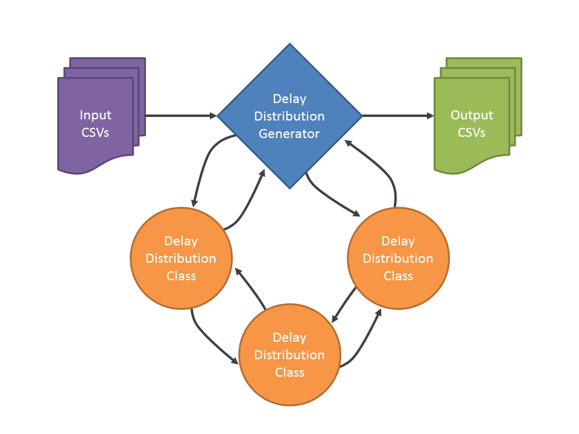

The Travel Time Distribution Tool implements the trial bus method of quantifying transit travel time unreliability. Under this method, a “trial bus” (or trial train/tram/etc.) is imagined to traverse a study corridor. As the trial bus traverses the corridor, it passes through various zones where it could encounter some form of delay.
For each independent type of delay (e.g., delay due to double-parked vehicles), the study corridor is divided into independent analysis zones. In the case of double-parked vehicles, each block or each sector between consecutive bus stops might be considered an independent zone, since the presence of more than one double parked vehicle within such a zone would be unlikely to cause a greater delay than a single double-parked vehicle. Within each zone, there is some probability of the trial bus encountering a delay (in the example, encountering at least one double-parked vehicle). Conditional on this encounter, there is fixed delay or a probability distribution of delay that the trial bus will experience.
With zones defined and per-zone encounter and delay probabilities defined, the Travel Time Distribution Tool can model the distribution of delay along the entire study corridor. The Travel Time Distribution Tool additionally can model the cumulative delay experienced by the trial bus due to multiple independent types or causes of delay. Thus, total delay due to studied causes can be modeled along the corridor. Finally, baseline travel time (i.e., theoretical travel time that the trial bus would experience in the absence of modeled causes of delay) or other adjustments to travel time may also be specified, either as a fixed time or a probability distribution. In this case, the Travel Time Distribution Tool will provide a probability distribution of total transit travel time along the study corridor.
The Travel Time Distribution Tool is currently implemented as a Python script that reads in CSV files that specify analysis zones and delay attributes for each type of delay. The generator script is able to read in only supported file formats, which represent the supported delay types. Based on the CSV files present in the specified directory, the generator script will create instances of the appropriate classes of travel time distributions in order to calculate and aggregate delay experienced by a trial bus traversing the corridor. (Travel time distribution classes may invoke other classes in computing delay distributions.) The final cumulative results are then output to new CSV files.
Warning
Existing CSV files with the same name as the output files (ending in _cumulative.csv) will be overwritten without warning. If you wish to keep outputs from previous runs, move them to a different folder.
The below flow-chart illustrates this architecture.
The tool has been tested with Python 2.7. It is not compatible with Python 2.6 due to limitations of the decimal module in earlier releases. It is likely to work with Python 3 but this has not been tested.
USAGE: python generate_delay_distribution.py [scenario_name] spec_dir
| scenario_name: | (OPTIONAL) name of scenario, specifies input and output nomenclature |
|---|---|
| spec_dir: | path to directory containing csv files with delay information |
Scenario names allow multiple study corridors, corridor segments, or transportation scenarios to be modeled separately and concurrently (up to the number of cores on the modeling machine). For example, one may wish to model a variety of build alternatives, and for each of these to model delay separately for different segments of a project corridor.
For details on the CSV files to provide and how to name them, see Delay Distribution Generator (generate_delay_distribution).
The tool will output feedback and debug text to standard output. Therefore, it is advisable to pipe output to a debug file, as in python generate_delay_distribution.py [scenario_name] spec_dir > debug_feedback.txt